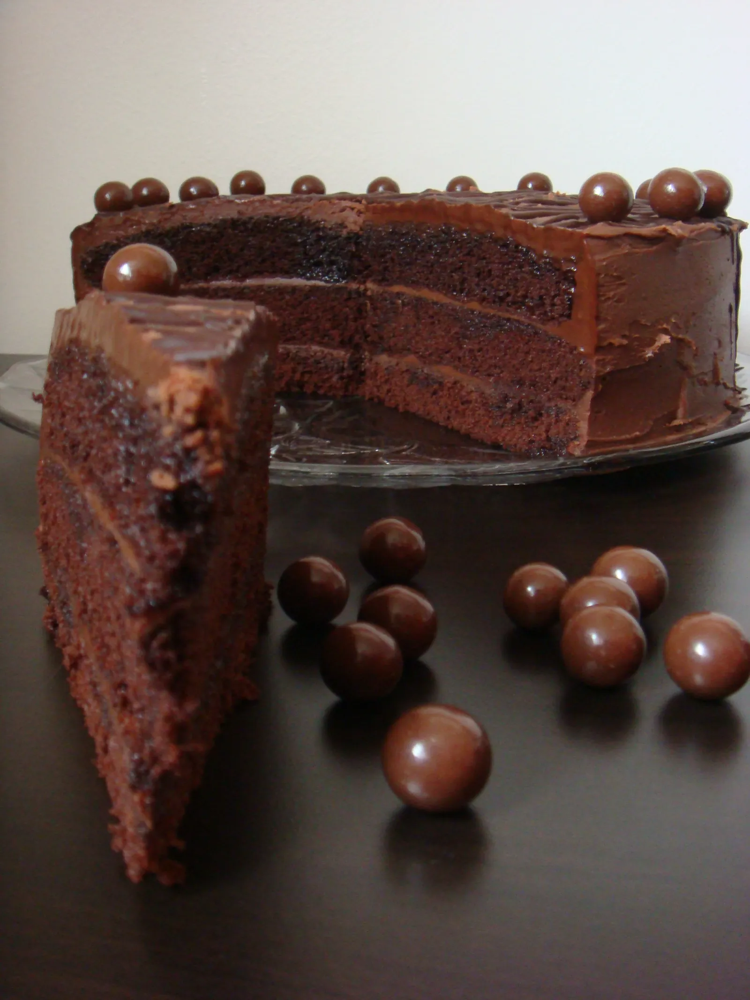

Pećnicu zagrijati na 180°C i pripremiti kalup s papirom za pečenje.
Za biskvit umutiti jaja sa šećerom dok ne postanu pjenasta. Dodati ulje, zatim naizmjenično brašno s kakaom i praškom za pecivo te mlijeko. Peći 20–25 minuta. Postupak ponoviti tri puta.
Za fil otopiti bijelu i crnu čokoladu u vrhnju na laganoj vatri. Dodati margarin i miješati dok smjesa ne postane glatka. Ostaviti da se malo stisne.
Sirup pripremiti kuhanjem vode i šećera, zatim dodati mlijeko s kakaom i kuhati još nekoliko minuta.
Slaganje: kora – sirup – fil – kora – sirup – fil – kora – sirup – fil. Tortu ostaviti preko noći i ukrasiti po želji.